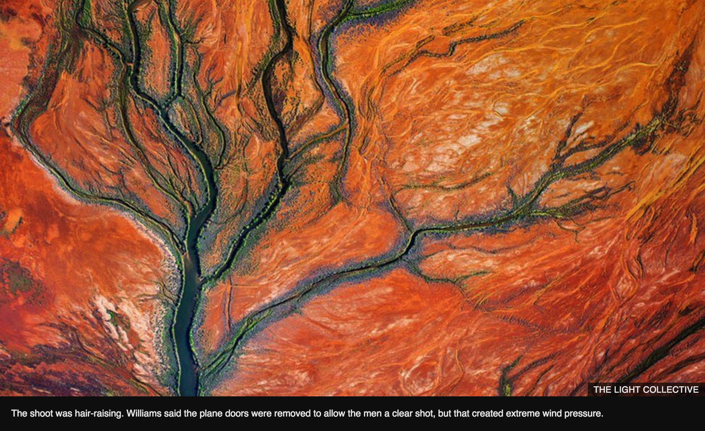
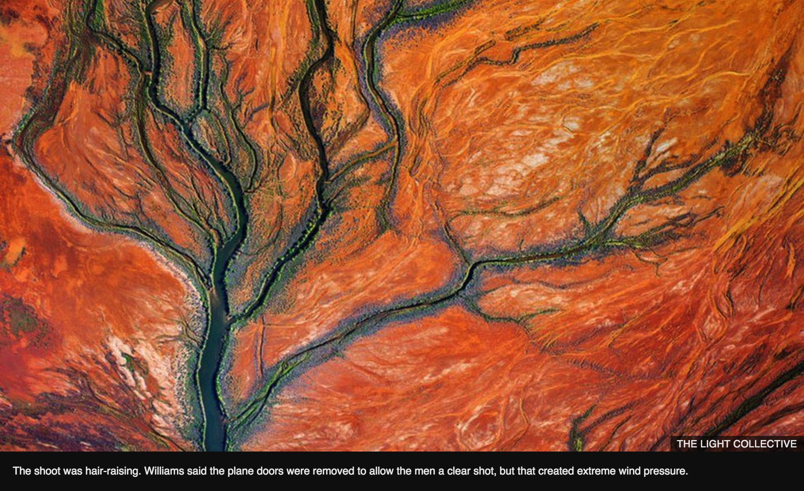

In pictures: Australia's Lake Eyre captured from the sky
16 November 2016 Last updated at 15:05
Australia's vast Kati Thanda-Lake Eyre has been captured in a series of spectacular aerial images for a new exhibition.
 Sign in
Sign in
NEWSAustralia
16 November 2016 Last updated at 15:05
Australia's vast Kati Thanda-Lake Eyre has been captured in a series of spectacular aerial images for a new exhibition.
